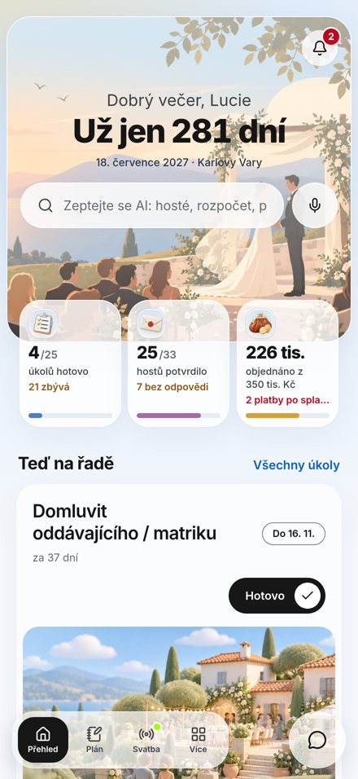
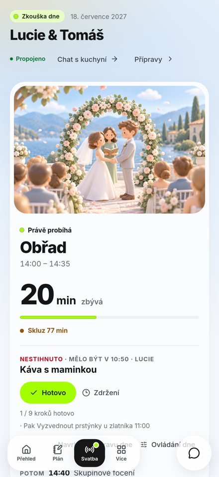
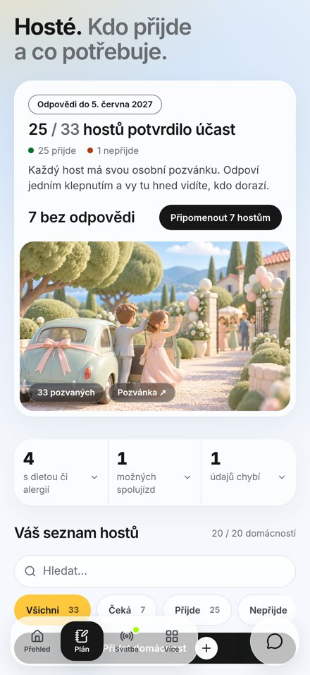
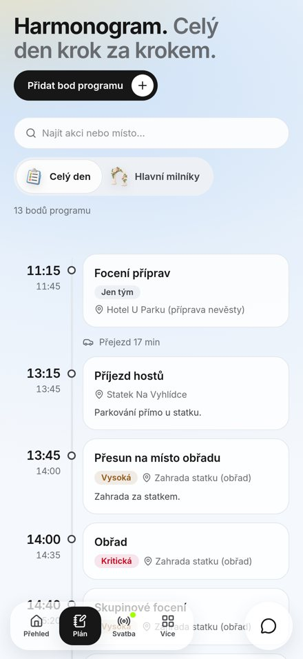
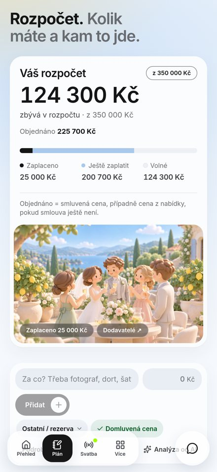

Ukázky práce k životopisu. Aplikace, nástroje a weby, které stavím s pomocí AI. Všechno jsou zatím dema, u každého projektu je napsané, v jaké je fázi.
Aplikace pro plánování svatby a řízení svatebního dne. Pár v ní spravuje hosty, rozpočet, dodavatele a harmonogram, hosté dostanou vlastní odkaz s pozvánkou a svatební tým svoje úkoly.
V den svatby aplikace sama ověřuje, jestli je všechno hotové. Když se něco zpozdí, přepočítá program a upozorní jen lidi, kterých se to týká. AI asistent odpovídá na dotazy nad daty svatby, například kolik hostů ještě neodpovědělo.
Next.js 16 · React 19 · TypeScript · PostgreSQL · Drizzle · PWA · Ollama / OpenAI API





Dílna na diagnostiku a záchranu iPhonů v jedné aplikaci pro Mac, něco jako iFixit v softwaru. Po připojení telefonu přes USB přesně určí model a stav zařízení a provede uživatele kontrolou záloh, firmwaru a obnovením.
Všechno běží lokálně v Macu. Před každým krokem, který může smazat data, aplikace varuje a čeká na souhlas. Model nikdy neodhaduje, když ho nepozná, zobrazí pomlčku.
Swift 6 · SwiftUI · macOS 14+ · bez externích knihoven
AELA měla být moje firma, kterou jsem chtěl postavit právě na zavádění AI do malých a středních firem. Tohle je její web: pět samostatných stránek služeb, od AI implementace přes weby a aplikace až po IT poradenství, kyberbezpečnost a ekosystém Apple.
Návštěvník si může sám spočítat orientační cenu a nechat si poradit s výběrem služby, aniž by musel hned volat.
HTML · CSS · JavaScript · Cloudflare
Web barokního Posvátného okrsku v Ostrově pro Kulturní a kreativní centrum Ostrov. Provází návštěvníka historií areálu, osobnostmi, které s ním byly spjaté, výstavou a prohlídkami.
Zaměstnanci centra si obsah upravují sami v jednoduché administraci, bez programátora.
Otevřít HTML verzi webuOtevře se jen HTML verze bez serveru: všechny stránky se dají proklikat, ale administrace, aktuality z webu KKC a prodej vstupenek v ní nefungují.
HTML · CSS · JavaScript · PHP · Cloudflare Stream
Krátké video o tom, jak z obyčejného broukání udělat s AI celou píseň. Zajímavější než samotné téma je ale způsob, jakým video vzniklo.
Střih jsem nedělal ručně. Úpravy jsem zadával ChatGPT a Claudovi a ty je samy provedly přímo v After Effects a DaVinci Resolve: střih, titulky, grafiku i efekty. Moje práce byla říct, co má video dělat, a hlídat výsledek.
After Effects · DaVinci Resolve · ChatGPT · Claude · Suno
Rozpracovaný projekt v rané fázi. Cílem je osobní IT technik přímo v Macu. Willy hlídá výkon, paměť, disk, síť a firewall, srozumitelně vysvětlí, co se děje, a běžné potíže opraví. Opravuje jen podle ověřených postupů a vždy se souhlasem uživatele.
Lokální AI model vybírá postup pouze z ověřeného katalogu, nebo odpoví „nevím“. Technicky nemůže vymyslet vlastní příkaz. Když se riskantnější krok nepovede, Willy změny vrátí zpět.
Swift · SwiftUI · llama.cpp · lokální AI · ECDSA / AES-GCM
Zatím první návrh a prototyp. Tréninková aplikace, která má držet motivaci pomocí cílů, výzev s přáteli a týdenního žebříčku. Odhaduje, kdy uživatel dosáhne svého cíle a s jakou pravděpodobností.
Prototyp v telefonu je živý: dá se v něm scrollovat, odškrtávat úkoly a přepínat obrazovky spodní lištou.
Otevřít na celou obrazovkuHTML · Tailwind CSS · JavaScript